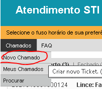
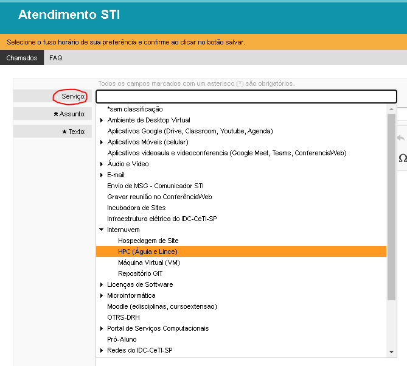

Getting Support
Before getting support, check the FAQ page.
If you need support for shark, aguia or lince, access the support website and click in Usuário:
Then log into sistema USP and click “Chamados->Novo Chamado”

Under “Serviço:” select “Internuvem->HPC (Águia e Lince)”
